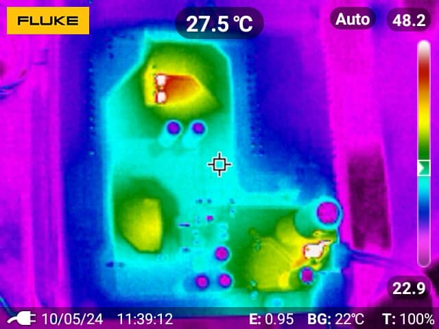
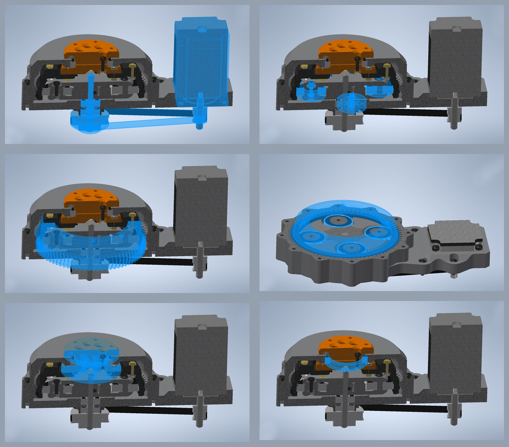
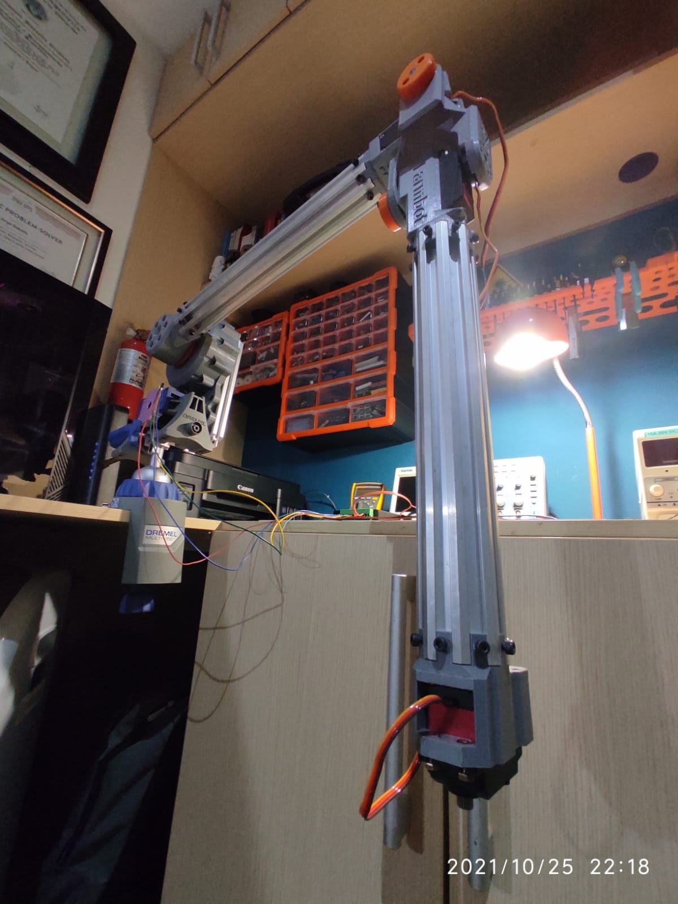
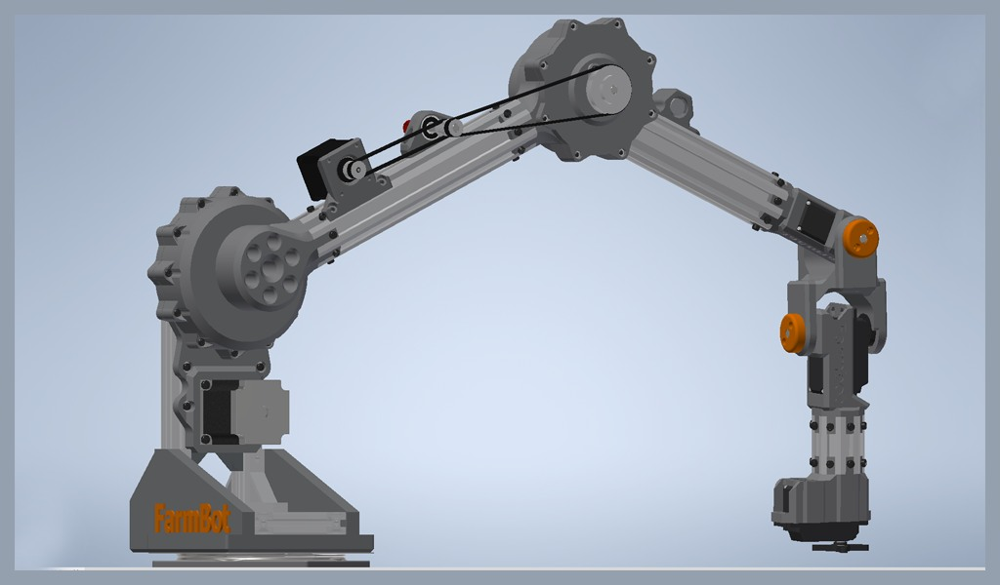
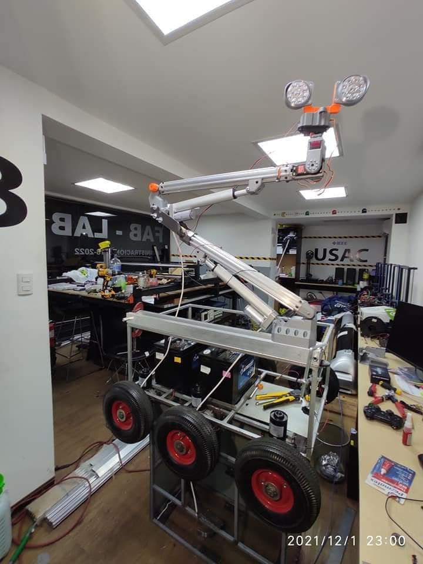
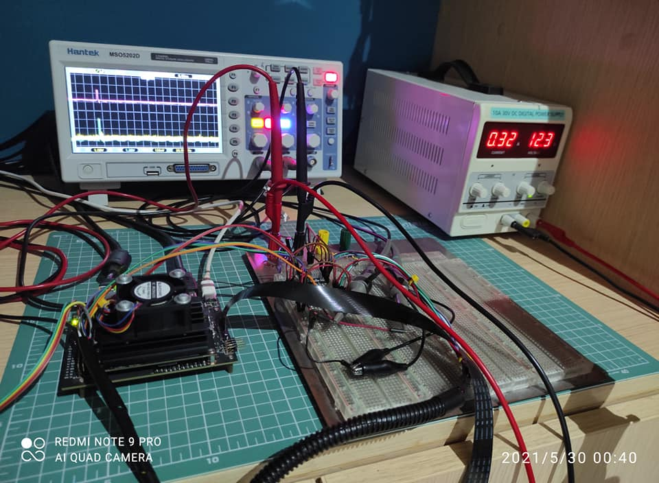

Photo Gallery
ECFM — Laboratorios de Simulación e Instrumentación




O+M Plus — Algoritmos de Coberturas Wireless


Desarrollo de prototipos









Bomberos Voluntarios — Servicio y Capacitación